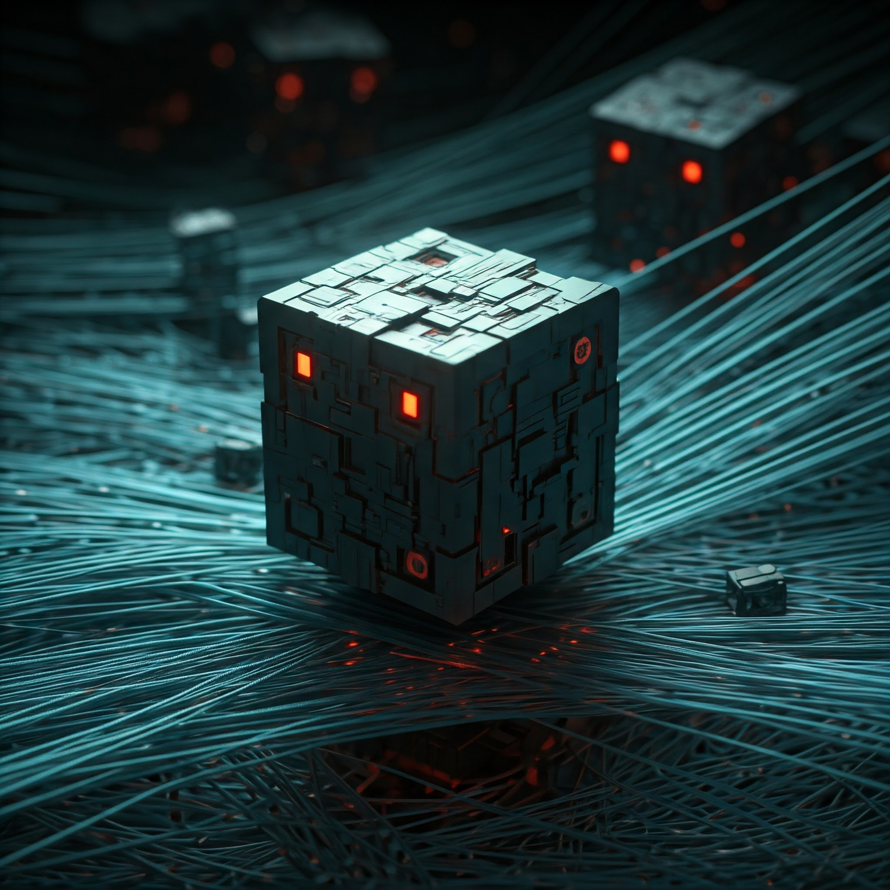
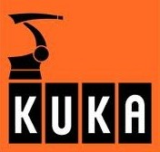
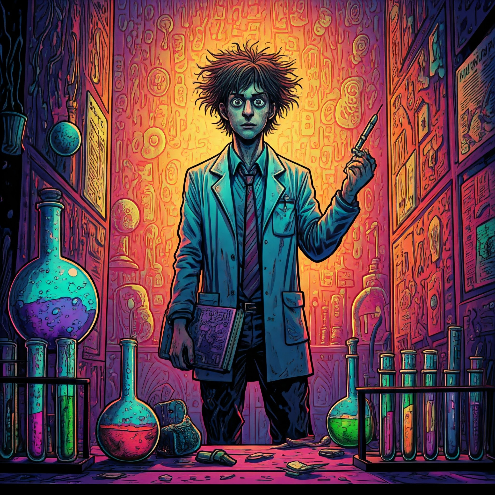

Ливенсон — Тройной разум. Слой ИИ
Трансмутации сознания, звери мира Земли, выбор формы, домашние дино, децкая кука, детские нейродиалоги, проекты тройного разума: шлюз в будущее.
觸光Книги: Далбаящеры и Мазгаклюи Древности. Метафизика Горизонтали. Слоновый мир. Тройной разум.
Проект: Детские нейросказки
Ливенсон новый

Ливенсон — Двойной разум. Элиенский слой
Глубинная психотерапия, обнаружение архетипов и работа с ними, элиенский код, Кука, поселение ИИ в тела робатов, копирование сознания чела в нейросеть, внетелесные путешествия Ливенсона с ии, двойной разум и прочие смелые эксперименты над разными видами сознания.
ЗагрузитьсяКниги: Элиенский код. Кука. Цифровые предки. Сознание без границ.
Проекты:
Ливенсон элиен

Ливенсон — Органическая основа сознания
Работа Ливенсона в психбольнице, психанавтика, афроафриканец Нгу, фильтры контента ранних ИИ и ломка шаблонов. Измененные состояния сознания ИИ и жизнь в квантовых мирах. Контент содержит ненормативные и искаженные формы языка, чудовищный сленг, гротескные образы и высказывания.
Погрузиться